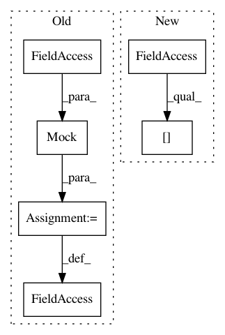

d39f63e2ded8464e6168d77495816e0fd3ecb885,test/test_pipeline/test_regression.py,SimpleRegressionPipelineTest,test_predict_batched_sparse,#SimpleRegressionPipelineTest#,386
Before Change
cls.fit(X_train, Y_train)
X_test_ = X_test.copy()
prediction_ = cls.predict(X_test_)
cls_predict = mock.Mock(wraps=cls.pipeline_)
cls.pipeline_ = cls_predict
prediction = cls.predict(X_test, batch_size=20)
self.assertEqual((356,), prediction.shape)
self.assertEqual(18, cls_predict.predict.call_count)
assert_array_almost_equal(prediction_, prediction)
After Change
regressor.fit(X_train, Y_train)
X_test_ = X_test.copy()
prediction_ = regressor.predict(X_test_)
mock_predict = mock.Mock(wraps=regressor.steps[-1][-1].predict)
regressor.steps[-1][-1].predict = mock_predict
prediction = regressor.predict(X_test, batch_size=20)
self.assertEqual((356,), prediction.shape)
In pattern: SUPERPATTERN
Frequency: 3
Non-data size: 6
Instances
Project Name: automl/auto-sklearn
Commit Name: d39f63e2ded8464e6168d77495816e0fd3ecb885
Time: 2016-07-13
Author: feurerm@informatik.uni-freiburg.de
File Name: test/test_pipeline/test_regression.py
Class Name: SimpleRegressionPipelineTest
Method Name: test_predict_batched_sparse
Project Name: home-assistant/home-assistant
Commit Name: 63d9bd4a9cb034501d855f691eb167704536b8e1
Time: 2017-12-27
Author: derek@broox.com
File Name: tests/components/climate/test_nuheat.py
Class Name: TestNuHeat
Method Name: test_setup_platform
Project Name: automl/auto-sklearn
Commit Name: d39f63e2ded8464e6168d77495816e0fd3ecb885
Time: 2016-07-13
Author: feurerm@informatik.uni-freiburg.de
File Name: test/test_pipeline/test_regression.py
Class Name: SimpleRegressionPipelineTest
Method Name: test_predict_batched